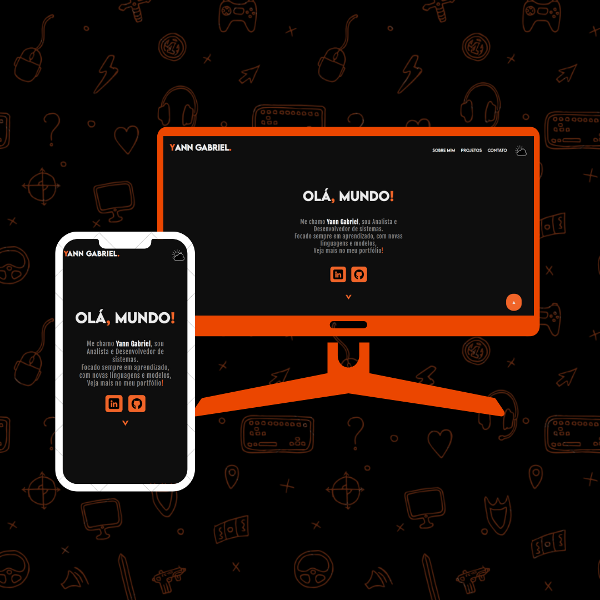
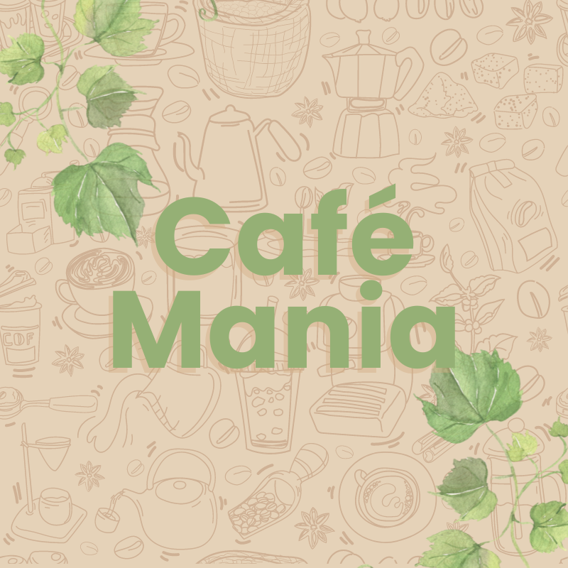
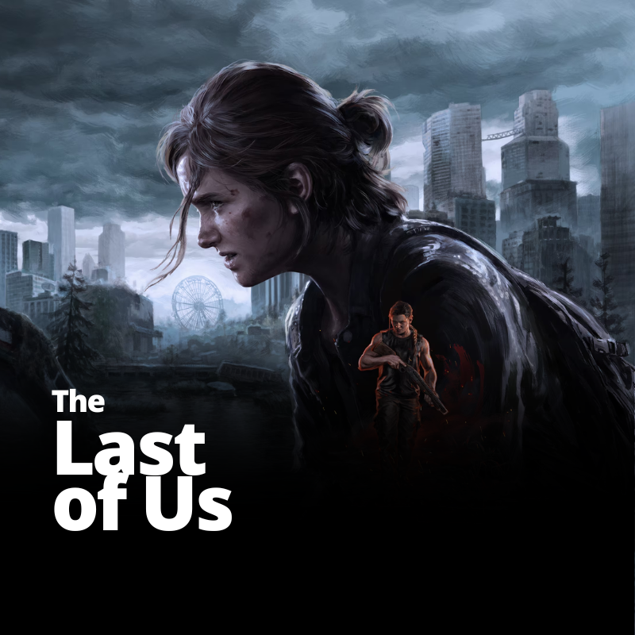
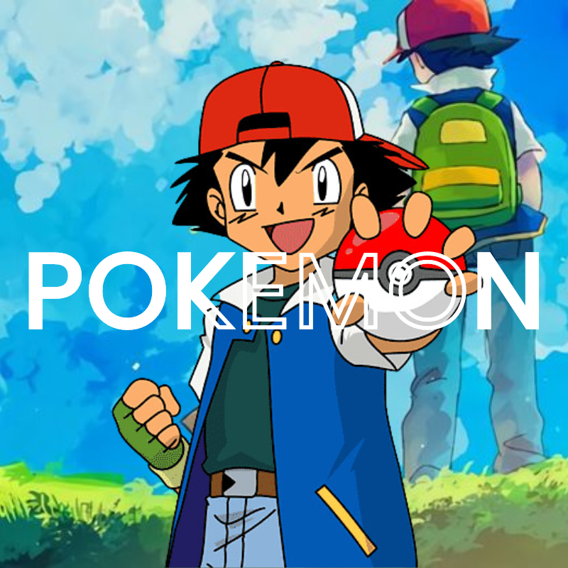

Meus Projetos:
Aqui você verá os projetos que produzi, com opções de vizualização do site e seu código no GitHub!

Portfólio:
Projeto feito como um Hub pricipal, onde meus projetos são armazenados,
focada em ser uma área de apresentação, a mesma foi feita com
tecnologias Front-End.



Café Mania
Projeto onde simulo um cardápio virtual com animações em JavaScript,
estilização com SCSS e com foco na imersão do usuário!
Entre já e veja as gostosuras da cafeteria!


The Last of Us
LandPage feita para amostra e divulgação da franquia The Last of Us,
feita com animações em JS e responsividade para todos os dispositivos!
Todos os direitos de imagem reservados no site do projeto.

Mundo Pokemon:
Projeto feito com foco em JS e SCSS.
Com a intenção de entregar ao usuário a primeira vista do mundo pokemon,
meu website mostra tudo que precisa saber, com um carrossel interativo e com a aplicação de Api para a pokedex!